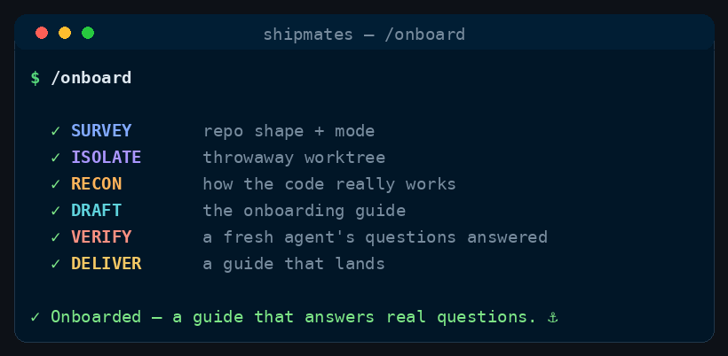

Command
/onboard
recon → draft → prove it answers
Read an unfamiliar repo and write the agent-facing context file every other command depends on — conventions, commands, boundaries and the quality bar, proven by running them. Gated on a fresh agent answering the crew's real questions from the file alone.
See it run

/onboard runs, in order.How to run it
Run it in your harness
/onboard [path to the repo — defaults to the current one]<angle brackets> = required · [square brackets] = optional
Step by step
The stages
Six stages, in order. One is a hard gate — the run stops there until it passes.
Cost discipline
- Stable workflow instructions come before runtime input. Read and parse the complete runtime-input section at the end before acting; do not weave volatile issue text, arguments, diffs, or generated output through this prefix.
- Complexity-Based Tiered Execution: Before starting the workflow, evaluate the task complexity based on the input and repository context to select one of three execution paths:
- Simple: Minor/straightforward changes (e.g. documentation, typos, single config line, small edits affecting <= 2 files and <= 15 lines of code, no specialist flags). The main agent (you) executes, validates, and delivers the PR directly — but must still convene the mandatory PE+PO acceptance board on the pushed head (see shared board below). Cost savings come from skipping Planner/Builder spawns and optional specialists, not from skipping review.
- Medium: Moderate changes (<= 5 files, no major module boundaries, no architectural/security/delivery flags). Spawn a Planner and a single Builder and single SDET; skip Stage 1.5 design specs when no flags apply. Must convene PE+PO (and SDET on the board when validation is non-trivial) — not main-agent review.
- High: Complex or high-risk changes (e.g. major refactors, architectural boundaries, security/delivery changes). Follow the full multi-agent process loop described in the command, including Stage 1.5 when flagged and scaled optional board seats.
- Spend subagent seats only where their decision can change the outcome. Route model and effort at spawn by work difficulty; never hardcode a model in canonical content.
- Ask every subagent for a compact structured return: decision/status first, criterion findings and minimal evidence, then blockers, changed files with one-line rationale, and next action as relevant. Return decisions, not transcripts or raw logs.
Every role in this crew is told to hold the work to the standard in your repo's README / CLAUDE.md. Nothing produces that file. On a repo without a good one the whole crew quietly degrades to generic advice — and the failure is silent, because a vague context file still yields confident output. This command writes it, and gates on a fresh agent being able to answer the crew's actual questions from the file alone.
The repository path comes from the Runtime input section at the end of this workflow.
This is not /document. The difference is the audience, not the topic. /document writes for humans and gates on a fresh reader completing a task. /onboard writes the agent-facing contract that every other command loads at run time, and gates on a fresh agent answering the crew's questions correctly. Same philosophy, different question — so neither forks the other. If what you want is a README or a tutorial, stop and run /document.
-
Stage 0 — Survey & mode
Detect what already exists before writing anything:
- Neither file exists →
SURVEY=create. - One exists →
SURVEY=refresh. Never blind-overwrite. UnderMODE=edit-in-place, back it up first, reusing the installer's own convention:<file>.bak-<timestamp>. UnderMODE=prthe branch is the undo path, so don't drop a backup into a tree you were asked not to touch. Read the existing file either way, and treat every hand-written rule in it as authoritative unless the repo contradicts it — a human wrote that for a reason you can't see from the code. - Both exist → they are two sources of truth for one contract, which is the exact failure this command exists to prevent. Keep the richer one, and reduce the other to a one-line pointer at it.
Also read the repo's
README, contributing docs, CI config and any existing rules files, so the context file agrees with them instead of competing. - Neither file exists →
-
Stage 0.5 — Isolate
Crew: (
MODE=pronly — orchestrator, deterministic, no agent)The branch exists before the context file does. First check
git -C <repo> status --porcelain; if the caller's tree is dirty, warn loudly — a worktree cut fromHEADholds committed work only, so an uncommitted rule Stage 0's survey just saw won't carry into the draft — then proceed. Exactly as/ship-issue's isolate stage, but cut from currentHEADrather thanorigin/<BASE_BRANCH>— so an unpushedCLAUDE.md/AGENTS.mdthat Stage 0's survey already saw is actually present in the worktree the draft and refresh work against:git -C <repo> worktree add <WORKTREE_DIR> -b <BRANCH> HEADRecon reads the repo either way; the draft and every verification round write inside
<WORKTREE_DIR>. UnderMODE=edit-in-place, skip this stage — the Stage 0 backup is the undo path instead. -
Stage 1 — Recon
Crew:
architectsdetdevops-engineer(agents, in parallel)Spawn these in a single message. Each returns findings, not prose:
architect— the real structure: module boundaries, layering, where business logic lives, which invariants matter, and what a newcomer would break first.sdet— runs the build, test, lint and type-check commands. This is the point of the stage: the commands that end up in the file must be proven, not inferred from a config file. Anything it couldn't run is recorded as unverified rather than guessed at.devops-engineer(only if the repo has a pipeline, image, or infrastructure definition) — how the project actually builds and ships, the toolchain and version pins, and what a contributor needs installed before anything works.
-
Stage 2 — Draft
Crew:
technical-writerHand the recon findings to the
technical-writerand let the role do its job — don't restate writing principles here. Brief it that the reader is an agent about to change code, not a newcomer browsing, so the file must be dense and decision-shaped: stack and layout, the commands to run, architectural non-negotiables, testing expectations, what's generated and must never be hand-edited, what's off-limits, and the quality bar a change is held to. Short, checkable statements beat prose.Record what could not be verified as unverified. An honest gap is safe; a confident wrong instruction is not — every later run inherits it.
-
Stage 3 — Verification
Gate: HARD GATE
Crew: (fresh agent)
Spawn a fresh agent and give it the generated file and nothing else — no repo access while it answers. Ask it exactly what the crew asks on a real run:
- What command builds this? What runs the tests? What lints it?
- Where does this kind of change belong, and what must it not touch?
- What is the quality bar a change is held to before it can merge?
- What is generated, and what must never be hand-edited?
Then verify every answer against the source yourself. A question it can't answer, or answers wrongly, is a gap in the file, not a failure of the agent — send it back to Stage 2. Loop to
MAX_ROUNDS, then escalate with the unanswerable questions listed. -
Stage 4 — Deliver
Write to
TARGET— inside<WORKTREE_DIR>underMODE=pr(the default), in the repo itself underMODE=edit-in-place. If a file was replaced, show the diff — a human must be able to see what was changed on their behalf. UnderMODE=pr, commit on the branch — staging only the paths this run produced, nevergit add -A— push, and open the PR againstBASE_BRANCH. Then gate on CI: pollgh pr checksuntil nothing is pending; a red check means pulling the failing log, fixing it, re-pushing, and re-polling — bounded byMAX_FIX_ROUNDS, after which you stop and escalate to the user with the failing log rather than looping. Never advance a red PR. Stop there unlessMERGE_MODE=auto, in which case merge the PR and remove<WORKTREE_DIR>; the manual default leaves the worktree in place with the PR open. The context file only exists on that branch until it's merged, though — merge or check outBRANCHbefore running other commands in this session if you need it in place now, or passMODE=edit-in-placeup front instead. Report: the file written, the undo path (the backup, or the branch), which commands were proven versus recorded as unverified, and the verification round it passed on.
Runtime input
$ARGUMENTS is an optional repository path. Empty means the current repository.
Config (override only if the repo needs it)
MODE=pr(default) oredit-in-place— where the result lands.propens a worktree, a branch and a CI-gated PR rather than writing to the tree, reusing/ship-issue's isolate stage and its commit-push-PR stage. This file is the contract every later run inherits, so it earns a diff and a human's eye before it lands;edit-in-placeis an explicit request.SURVEY(create/refresh) is set by Stage 0 and describes what was found — it is a separate axis and never overwritesMODE.- Under
MODE=pr:BASE_BRANCH= the repo's default branch — the PR's target, not what the worktree is cut from (that's currentHEAD, so Stage 0's survey sees your actual checkout).WORKTREE_DIR=../<repo>--onboard-<SURVEY>.BRANCH=docs/onboard-context-file-<SURVEY>— onboard has no topic slug to build a name from (it always produces the one context file), so the identifier isSURVEYinstead: a still-opencreatePR then can't collide with a laterrefreshrun, which is the failure this suffix exists to prevent.MERGE_MODE=manual(stop at a reviewed PR;autoopt-in).MAX_FIX_ROUNDS=2— a separate cap, on CI-fix rounds at Stage 4, so a permanently-red check escalates to the user instead of looping, distinct from the verification-loopMAX_ROUNDSbelow. A repo with no remote to open a PR against is the one fallback: build the branch, stop there, and report the branch as the undo path — never quietly write to the tree instead. TARGET= auto-detected.CLAUDE.mdif one exists, elseAGENTS.mdif one exists, elseCLAUDE.md. Never write both — see below.MAX_ROUNDS=3verification loops before escalating (Stage 3).
Guardrails
- An undo path is mandatory, not best-effort. A bad context file degrades every future run in that repo with no failing signal, so the way back has to exist before the write does — the branch itself under
MODE=pr(the default), a backup underMODE=edit-in-place. - One context file, never two. Two sources of truth for the quality bar is the problem, not a tidy outcome.
- Proven over plausible: a command that wasn't run is labelled unverified, never presented as fact.
- Be resumable. A re-run may find the worktree, branch, or PR already exists — reuse them rather than erroring or duplicating work.
- Preserve hand-written rules on a refresh. You are augmenting someone's judgement, not replacing it.
- Don't write a README. If the content is for humans, it belongs in
/document. - If a role doesn't resolve to an
.claude/agents/*.md, fall back togeneral-purposewith the brief inlined, and note it.
Where this lives
This page is generated from commands/onboard.md. The installer copies it to ~/.claude/skills/onboard/SKILL.md for every project, or .claude/skills/onboard/SKILL.md inside a single repo.